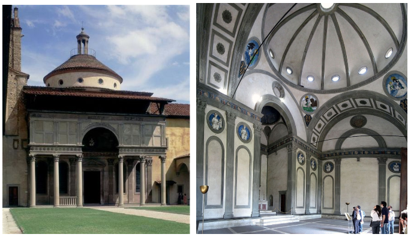
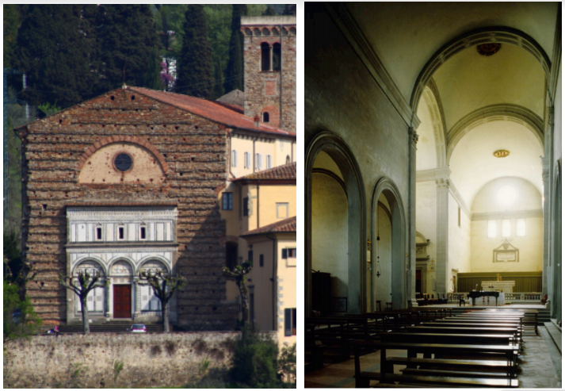
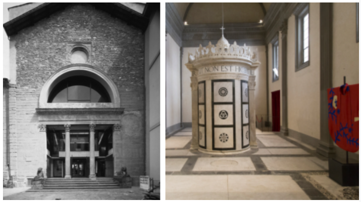
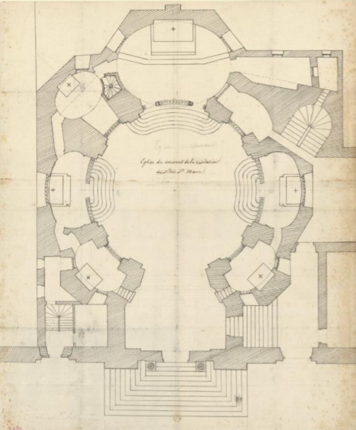
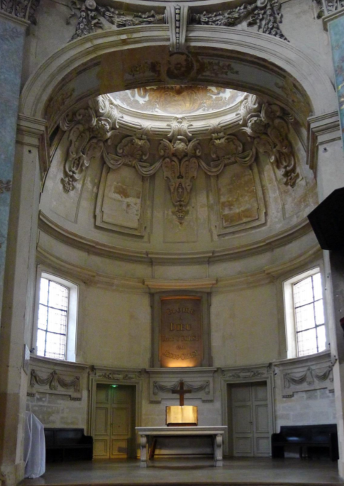

<!DOCTYPE html>
<html lang="en">
  <head>
    <meta charset="UTF-8">
    <meta name="viewport" content="width=device-width, initial-scale=1.0">
    <title>History Quiz</title>
    <style>
       img {
         display: none;
         height: calc(100vh - 50px);
       }
    </style>
  </head>
  <body>

    <div id="images">
      <!-- IMAGES GO HERE (with data-label associated) -->
  
      
      
      <!--
      
      
      
      
      
            

      
      
      
      
      
      
      

      
      
      
      
      
      
      
      
      

      
      
      
      
      
      
      
      
      
      
      
      
      

      
      
      
            

      
      
      

      
      

      
      
      
      
      
      
      
      
      
      
            

            
      
      
      
      
      
      
      
      
      
      

      
      
      
      
      
      
      
      
      
      
      
      
      
      
      

      
      
      
      
      
      
      
      
      
      
      
            
      -->
    </div>

    <input type="text" id="response">
    
    <script>
      "use strict";
      
      //const r = _ => images[Math.floor(Math.random() * images.length)];
      let index = 0;
      let correct = 0;
      let images = Array.from(document.querySelectorAll("img"));
      shuffle(images);
      let input = document.querySelector("input");
      
      let currentImg = images[index]
      currentImg.style.display = "block";
      
      input.addEventListener("keydown", (e) => {
        if (e.key === "Enter") {
          let c = currentImg.getAttribute("data-label");
          let y = input.value.trim();
          if (c === y) {
            alert("Correct!");
            correct++;
          } else {
            alert(`Incorrect!\nCorrect: ${c}\nYours: ${y}`);
          }
          input.value = "";
          currentImg.style.display = "none";
          if (index === images.length - 1) {
            alert("Done!\n" + (correct / images.length * 100) + "% correct answers");
            index = -1;
            shuffle(images);
          }
          currentImg = images[++index];
          currentImg.style.display = "block";
        }
      });

       function shuffle(array) {
        var currentIndex = array.length, temporaryValue, randomIndex;

        // While there remain elements to shuffle...
        while (0 !== currentIndex) {

          // Pick a remaining element...
          randomIndex = Math.floor(Math.random() * currentIndex);
          currentIndex -= 1;

          // And swap it with the current element.
          temporaryValue = array[currentIndex];
          array[currentIndex] = array[randomIndex];
          array[randomIndex] = temporaryValue;
        }

        return array;
      }
    </script>
  </body>
</html>
